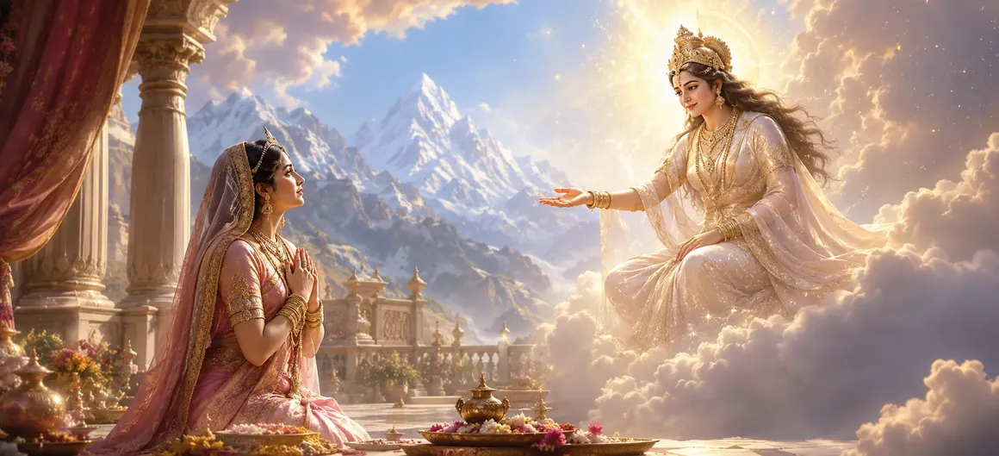

This chapter narrates the sacred moment when Queen Menā receives a divine boon that will shape the future of the worlds. Through her devotion, humility, and faith, she becomes the recipient of a blessing that foretells the birth of a divine daughter. This boon forms an important part of the cosmic plan that will ultimately lead to the union of Shiva and Shakti.
Menā remained steadfast in her devotion to the Divine. Her pure heart, righteous conduct, and unwavering faith attracted divine grace. Through sincere worship and noble character, she became worthy of receiving a sacred blessing.
Pleased with Menā's devotion, the Divine manifested before her and blessed her with comforting words. The atmosphere became filled with peace and spiritual radiance as the moment of divine favor arrived.
The Divine granted Menā a boon that she would become the mother of an extraordinary daughter. This child would be none other than the embodiment of Divine Shakti, destined to fulfill a great cosmic purpose and bring blessings to all beings.
Upon receiving the boon, Menā and King Himālaya rejoiced greatly. They understood that the blessing carried profound spiritual significance and expressed their gratitude through prayers and acts of devotion.
Sincere faith attracts divine blessings.
The Divine rewards devotion and purity of heart.
Great events unfold according to divine purpose.
The boon given to Menā was not merely a personal blessing. It was a promise that the future would witness the return of Divine Shakti and the fulfillment of a cosmic destiny that would benefit gods, sages, and humanity alike.
This chapter teaches that divine blessings often come to those who remain patient, faithful, and devoted. The Divine sees sincerity of heart and rewards it in ways that may shape not only individual lives but the destiny of entire generations.
The boon highlighted the sacred role of motherhood in the divine plan. Through Menā, the world would receive the incarnation of Pārvatī, demonstrating how a devoted mother can become an instrument of cosmic purpose.
The chapter reminds readers that divine promises never fail. Though time may pass before their fulfillment, every blessing granted by the Divine unfolds at the perfect moment according to sacred destiny.
"Divine blessings blossom in the hearts of those who remain steadfast in faith and devotion."
After receiving divine reassurance from the Goddess, the sacred plan continues to unfold. In this chapter, Menā receives a divine boon that foretells the birth of Goddess Pārvatī. Continue onward to witness the blessed arrival of the Divine Mother in her earthly form.